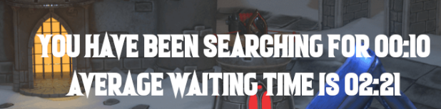
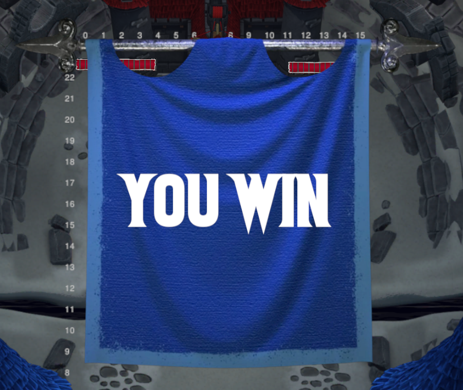
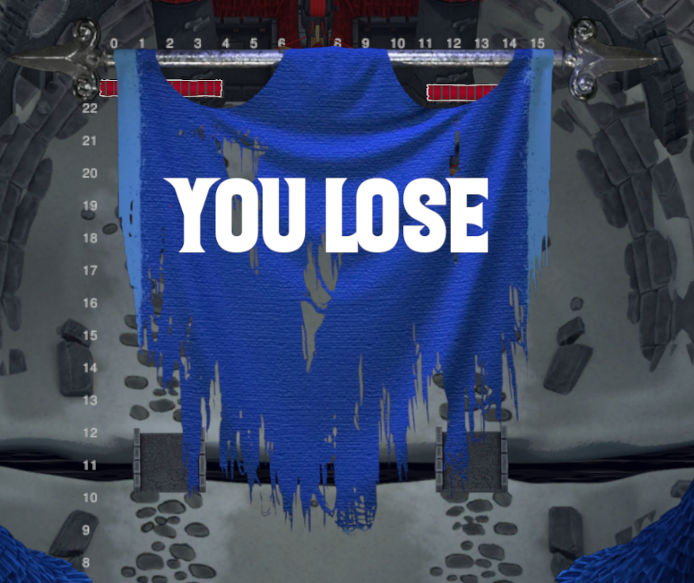

Changelog v0.9
Siamo felici di presentarvi la terza Settimana del Contenuto di Towers of Minduir!
Tempo di attesa
Abbiamo implementato un indicatore che mostra il tempo di attesa medio durante il matchmaking:

Stendardi
Abbiamo riempito lo spazio vuoto alla fine del match! Ora verranno presentati degli stendardi che indicano il risultato del match.
Vittoria:

Sconfitta:

Bugfixes
- Risolto un bug sull'attribuzione della vittoria
- Risolto un glitch sul tasto del matchmaking innescato dalla navigazione del menu durante la ricerca